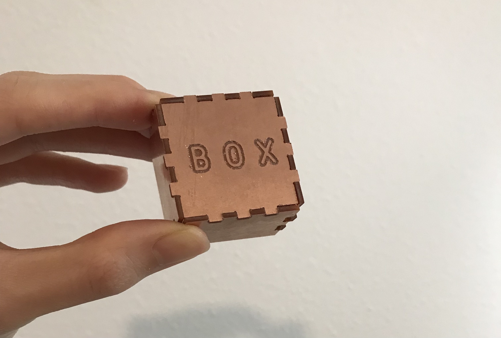
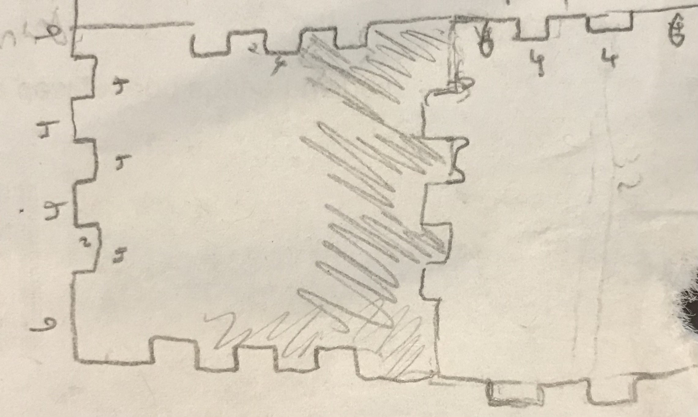
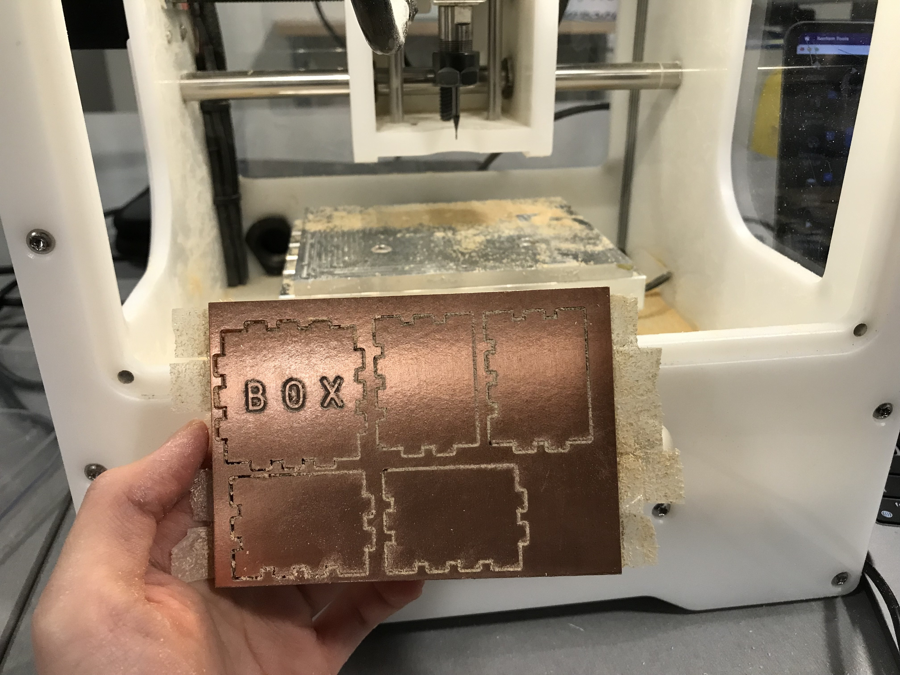
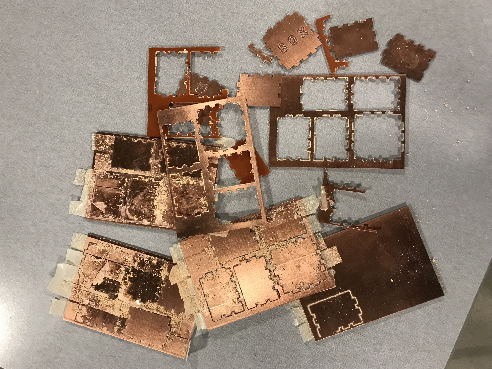
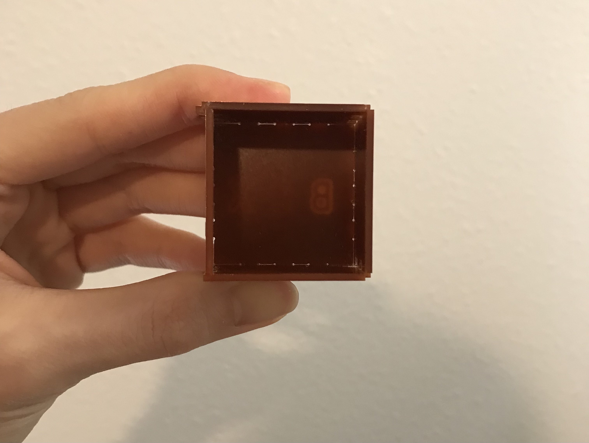

The documentaion for this week includes how I used the Other Milling Machine to create a box. Below is a picture of the final output.
I started with drafting how the box should look like. There are 3 main things that I need to take into consideration. First is the size of the FR1 board; second is the size of the different surfaces of the box; third is the dimension of the T bone. Eventually, I decided that the size of the t bone will be 4mm * 2mm with a portruding circle that has a diameter of 1 mm. I kept the extruding and intruding parts at the same width, which eventually caused me lots of trouble.
To make it digital, I drew out the shapes in Adobe Illustrator. Next, I converted the file to Rhino so I could mesure the sizes of each piece. At this step, I made the mistake of extruding the shapes, which I later found out was unnecessary when I was using Bantam. Then I added a text and created a saparate layer for it. I hid one layer first and "exported selected" so I got 2 individual DXF files for the outline and the engraving.
Afterwards, I followed the instructions on the slide and used KidCad to make some adustments and converted the fiile to gbr format. For the engraving, I set the line width as 0.3 mm.
Lastly, I went to the Mill and opened up Bantam to prepare for milling. I measured the height of a FR1 board first, and then I pasted them together and measured the height again to calculate the offset number. Afterwards, I joggled the bed and adjusted both x and y to zero.
Everything was ready and I started milling. Unfortunately, the bit fractured so I had to stop and install a new one. It's important to select "install tool" and "rehome" after installing a new bit, which I missed at first
After making all the adjustments, I successfully milled the outlines of the box.
However, I realized that the extruding and intruding parts didn't fit together. Therefore, I made adjustments in my Rhino file and decreased the width of the extruding part by about 8% and I milled again. Unfortunately, they still didn't fit. I discarded a lot of FR1 boards before I eventually decided to decrease the width by a total of 20%. They were still pretty tight, so I had to press super hard for them to fit.
I'm glad it eventually worked out after multiple trial and error. It's still very confusing why I had to decrease the width by 20% for the parts to fit.
-----
Below is the source file:
3dm, dxf, gbr files-----
Biggest thanks to Xenia and the 533 Support Group for all the help!